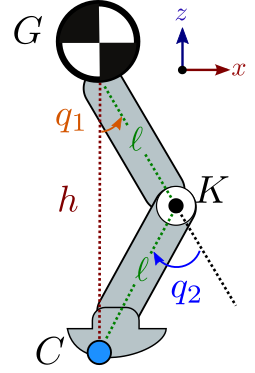
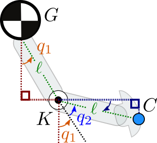
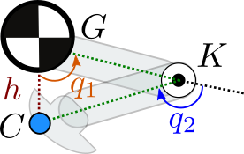

In this post, we are taking a look at the kinematics of a simple leg with two links and one knee. Both links have the same length ℓ, making the leg "symmetric" in the sense that the mirror of any configuration with respect to the vertical plane is also a valid configuration. The joint angles, depicted to the right, are further subject to the following limits:
∣q1∣<2π∣q2∣<πWe will derive analytically the forward kinematics of this leg in the sagittal plane, then consider its inverse kinematics for crouching.
Forward kinematics
Consider the leg depicted in the figure above. The hip angle q1 and knee angle q2 fully define the position of every point on every link of the leg, including the origin of the hip G (this could be the center of gravity of a lumped mass sitting on top of the leg and representing the robot's chassis), the knee K and the end effector C. Forward kinematics is the function that maps joint angles (q1,q2) to the coordinates (xC,zC)=FK(q1,q2) of the end effector.
Our model is an articulated system (the most common case) where each link is connected to exactly one parent link by one (usually revolute) joint. For such systems, the forward kinematics function is naturally recursive: the coordinates of a point on a link can be decomposed into (1) a local offset from the joint between the link and its parent, and (2) the coordinates of that joint in the parent link. Applying this general idea to our case, we write:
xCzC=xK+(xC−xK)=zK+(zC−zK)The coordinates of the knee point are fully determined by the hip angle and the length of the first link:
xKzK=xG+ℓsin(q1)=zG−ℓcos(q1)We see how the recursive argument applies to the knee as well as with the appearance of the coordinates (xG,zG) of the origin of the hip, which is also the root of our kinematic tree. Recursion stops there.

Moving on to the second link, the figure to the right illustrates how we get the following sines and cosines:
xC−xKzC−zK=ℓcos(2π−q1−q2)=ℓsin(q1+q2)=−ℓsin(2π−q1−q2)=−ℓcos(q1+q2)Combining this system of equations with the previous one for (xK,zK), we get the overall formula for the forward kinematics of our leg:
xCzC=xG+ℓsin(q1)+ℓsin(q1+q2)=zG−ℓcos(q1)−ℓcos(q1+q2)This expression has the form (xC,zC)=FK(q1,q2), but the FK function implicitly depends on the coordinates (xG,zG) of the origin of the hip frame. This frame is known as the floating base of the mobile robot. We can equivalently consider it as a free joint between the hip and an inertial frame (often called the "world" frame in physics simulators and robotics software), in which case the coordinates of this joint become an additional argument to forward kinematics: (xC,zC)=FK(xG,zG,q1,q2). If we had a robotic arm, G would directly be a point of an inertial frame and we could without loss of generality fix it to, for instance, xG=0 and zG=0.
Inverse kinematics for crouching
Let us now compute an inverse kinematics function: given a desired "crouching height" h, we want to compute the joint angles (q1,q2)=IK(h) such that FK(IK(h))=(xG,zG−h). Injecting this property in the system of equations we obtained for forward kinematics, this amounts to solve:
0h=sin(q1)+sin(q1+q2)=ℓcos(q1)+ℓcos(q1+q2)One of the trick in the bag to manipulate systems of trigonometric equations is to make the identity cos(x)2+sin(x)2=1 appear. Let us rewrite the system as:
cos(q1+q2)sin(q1+q2)=ℓh−cos(q1)=−sin(q1)Taking the sum of the squares of these two lines leads us to:
1=ℓ2h2−2ℓhcos(q1)+1Which is great, as we now know that:
cos(q1)=2ℓhInjecting this equation back into the system gives us:
cos(q1+q2)sin(q1+q2)=ℓh−cos(q1)=2ℓh=cos(−q1)=sin(−q1)The two angles q1+q2 and −q1 have the same sine and cosine, therefore they are equal up to some 2kπ,k∈Z. But recall our joint limit assumption:
∣q1∣<2π∣q2∣<πThis means q1+q2−(−q1)=2q1+q2<2π, and the solution to our trigonometric system is unique: q2=−2q1. Solving for q1 alone yields:
q1q2=arccos(2ℓh)=−2arccos(2ℓh)This is our inverse kinematics function (q1,q2)=IK(h). We can check that it matches what we expect at the two boundary cases:

- Stretched legs: h=2ℓ, then q1=q2arccos(1)=0 and we are indeed in the configuration where the leg is fully vertical.
- Full crouch: h=0, then q1→+2π with a positive sign since 0<q1<2π. Similarly q2→−π, so that the leg is crouching as depicted in the figure to the right.
We can feel in the latter case that there is a discontinuity where our IK function can jump and should be used with care, although we will be fine within the continuous domain ∣q1∣<2π that we chose here. In practice the two links would collide before we reach the limit h→0, so the full crouch test here is rather an additional check for us to be convinced that our derivation is correct.
Note how we made another choice along the way: since h>0, taking q1=arccos(h/2ℓ) implies that q1>0 and the knee will always bend forward (as in human legs). An equally valid solution would be q1=−arccos(h/2ℓ), in which case the knee will bend backward (as in bird legs).
Discussion
Feel free to post a comment by e-mail using the form below. Your e-mail address will not be disclosed.